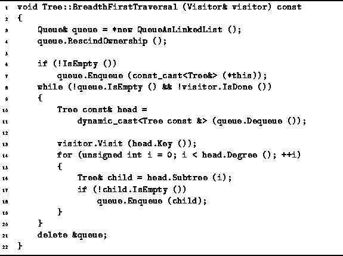

Data Structures and Algorithms
with Object-Oriented Design Patterns in C++
Data Structures and Algorithms
with Object-Oriented Design Patterns in C++
Program  defines the BreadthFirstTraversal
member function of the Tree class.
As defined in Section ,
a breadth-first traversal of a tree visits the nodes
in the order of their depth in the tree and
at each level the nodes are visited from left to right.
defines the BreadthFirstTraversal
member function of the Tree class.
As defined in Section ,
a breadth-first traversal of a tree visits the nodes
in the order of their depth in the tree and
at each level the nodes are visited from left to right.

Program: Tree Class BreadthFirstTraversal Member Function Definition
We have already seen in Section a non-recursive
breadth-first traversal algorithm for N-ary trees.
This algorithm makes use of a queue as follows.
Initially, the root node of the given tree is enqueued,
provided it is not the empty tree.
Then, the following steps are repeated until the queue is empty:
There are several aspects of the way in which the queue is used here
that need to be explained.
First, the queue will be used to contain trees which are subtrees
of the given tree.
Since the subtrees of a tree are owned by the tree,
they cannot also be owned by the queue.
Therefore, on line 4 of Program ,
the RescindOwnership function of the queue is called.
This is really conservative programming,
since the queue will normally be empty by the time its destructor is called
so it will should not have any contained objects to delete.
The BreadthFirstTraversal function is a const member function.
Therefore, it must not modify the given tree.
However, we need to push the tree onto the queue.
And since the Enqueue function
takes a non-const Object reference,
a constcast is required
on line 7 of Program
to cast away the constness.
This is not an unsafe cast in this context,
because the queue is a local variable
of the BreadthFirstTraversal routine
and because the routine does not modify anything which it later dequeues
from the queue.
 Copyright © 1997 by Bruno R. Preiss, P.Eng. All rights reserved.
Copyright © 1997 by Bruno R. Preiss, P.Eng. All rights reserved.